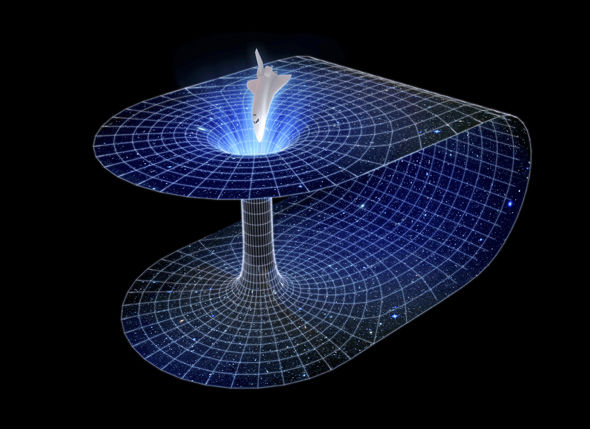

|
|
Time Travel |
Is time travel possible?
There are a large number of possible theory about types of travelling in time which are backwards and forwards.However, any of them have not proven yet.
|  |
Wormholes
Wormholes are hypothetical wraped space time which are also permitted by the Einstein field equations of general relativity. The method is to take one entrance of the wormhole and move it to within the gravitational field of an object that has higher gravity than the other entrance, and then return it to a position near the other entrance.
Infinite Cylinders
Astronomer Frank Tipler proposed a mechanism (sometimes known as a Tipler Cylinder) where one would take matter that is 10 times the sun’s mass, then roll it into very long but very dense cylinder. After spinning this up a few billion revolutions per minute, a spaceship nearby-following a very precise spiral around this cylinder-could get itself on a "closed, time-like curve."
Black Holes
Another possibility would be to move a ship rapidly around a black hole, or to artificially create that condition with a huge, rotating structure.
Around and around they’d go, experiencing just half the time of everyone far away from the black hole. The ship and its crew would be traveling through time,
-physicist Stephen Hawking
Imagine they circled the black hole for five of their years. Ten years would pass elsewhere. When they got home, everyone on Earth would have aged five years more than they had.
Cosmic Strings
Another theory for potential time travelers involves something called cosmic strings, narrow tubes of energy stretched across the entire length of the ever-expanding universe. These thin regions, left over from the early cosmos, are predicted to contain huge amounts of mass and therefore could warp the space-time around them.
Cosmic strings are either infinite or they’re in loops, with no ends, scientists say. The approach of two such strings parallel to each other would bend space-time so vigorously and in such a particular configuration that might make time travel possible, in theory.
Time Machines
It is generally understood that travelling forward or back in time would require a device—a time machine—to take you there. Time machine research often involves bending space-time so far that time lines turn back on themselves to form a loop, technically known as a “closed time-like curve.”
To accomplish this, time machines often are thought to need an exotic form of matter with so-called “negative energy density.” Such exotic matter has bizarre properties, including moving in the opposite direction of normal matter when pushed. Such matter could theoretically exist, but if it did, it might be present only in quantities too small for the construction of a time machine.
Also, humans may not be able to withstand time travel at all. Traveling nearly the speed of light would only take a centrifuge, but that would be lethal.
Using gravity would also be deadly. To experience time dilation, one could stand on a neutron star, but the forces a person would experience would rip you apart first.